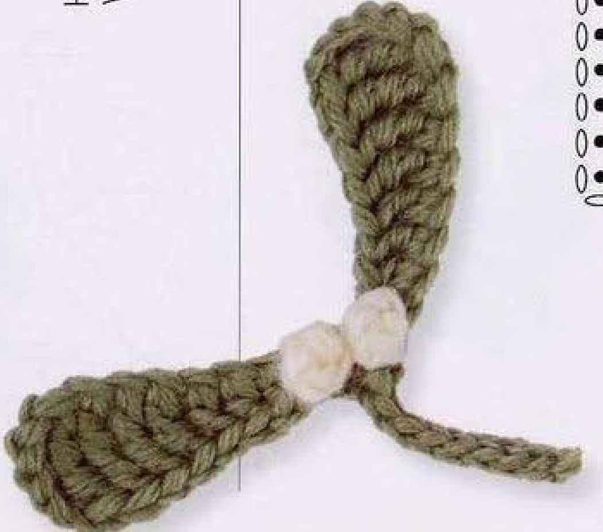
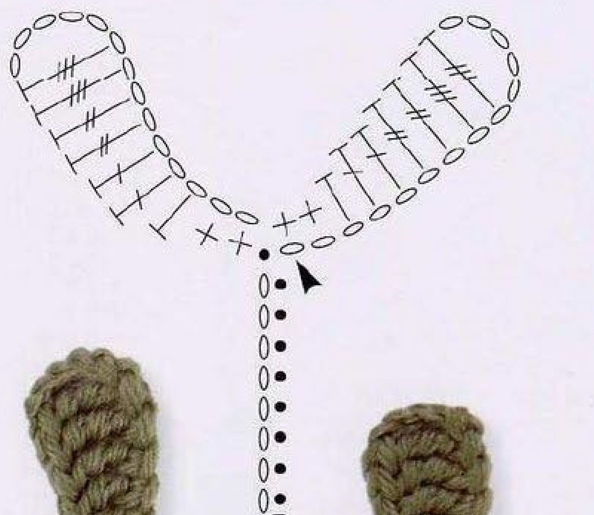
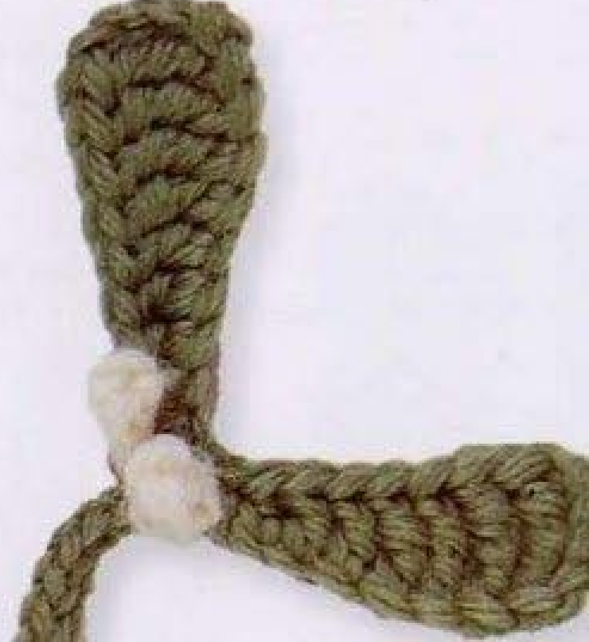

Crochet Mistletoe combines two long green leaves with two tiny white berries and a short stem. Its shape comes from a graduated run of stitches along each foundation chain, ending with the shortest stitches at the shared base. This guide follows pattern 53 in Lesley Stanfield’s 100 Flowers to Knit & Crochet, preserving the source construction in US crochet terms.

Key Takeaways
- Use DK wool in green A and white B.
- Make two leaves in one continuous green sequence, each from 14 chains.
- Graduate from US double trebles through trebles, doubles, half double, and singles.
- Keep the green yarn attached for a nine-chain stem with eight return slip stitches.
- Make two separate white berries, tie their ends, and sew them onto the leaves.
CROCHET MISTLETOE PATTERN
Project: One two-leaf sprig with a short stem and two sewn-on white berries. The compact recipe translates the book’s UK terms into US terms. Hook, gauge, yardage, dimensions, and difficulty are not specified in this entry; handling advice below is additional practical guidance.
| Skill level | Not specified. Practical guidance: familiarity with several tall stitch heights and small sewn components is useful. |
|---|---|
| Base size | One sprig with 2 leaves and 2 berries. Finished dimensions are not specified. |
| Yarn | DK wool: green A for leaves and stem; white B for berries. |
| Quantity, hook, gauge | Not specified. Choose a hook suited to your wool and assess the leaf fabric before making the whole sprig. |
| Notions | Scissors and a blunt needle for invisible finishing and berry attachment. |
| US abbreviations | ch = chain; sc = single crochet; hdc = half double crochet; dc = double crochet; tr = treble; dtr = double treble; sl st = slip stitch; RS = right side. UK dc, htr, tr, dtr, trtr become US sc, hdc, dc, tr, dtr respectively. |
| Leaves | With RS facing and A: *ch 14, skip 5 chains, work 1 dtr in each of the next 2 chains, 1 tr in each of the next 2, 1 dc in each of the next 2, 1 hdc in the next chain, and 1 sc in each of the next 2 chains. Repeat from * once. Sl st in the remaining strand of the first foundation chain. Do not fasten off. |
| Stem | With the attached green yarn, ch 9. Skip 1 chain and sl st in each of the next 8 chains. Fasten off invisibly. |
| Berry, make 2 | With B, ch 2. Skip 1 chain and work (1 dc, 1 sc) in the next chain. Fasten off invisibly. Make another berry in the same way. |
| Making up | Press the leaves. Tie both yarn ends of each berry, then sew the berries onto the leaves. Use a pressing method suited to your wool; no temperature is specified. |
How the Sprig Is Constructed
The two leaves are made consecutively with the same green yarn, rather than worked separately and sewn into a new branch. Each starts with fourteen chains. A sequence of decreasing stitch heights creates a wider outer end and a narrower base. The second leaf repeats the first before a slip stitch connects back into the remaining strand of the first foundation chain.
The stem follows directly from that green connection. It is a short chain with slip stitches worked back along it. Only after the stem is complete does the source direct you to finish the green yarn. The two white berries are separate pieces, made with a very small foundation and sewn onto the leaves during assembly.
The photograph shows the resulting arrangement: two elongated olive green leaves, two white details near their shared base, and a short curved stem. The entry does not ask for holly-like pointed edges, red berries, stuffing, or extra branches. Keep those differences in mind when comparing this sprig with other seasonal crochet decorations.
Materials and a Useful First Check
Prepare DK wool in green and white. Use green as A and white as B so the color letters in the compact card remain easy to follow. The source does not prescribe a particular green shade; its photographed example is olive toned. Matching yarn thickness for the two colors helps the small sewn berries sit comfortably beside the leaves.
No hook size, gauge, yarn quantity, or measured finished size is supplied in this pattern entry. Select a hook that works comfortably with your wool and examine the first leaf. The taller stitches should be distinct enough to count, and the foundation should support them without becoming a rigid cord. That sample provides more useful information than a guessed numerical gauge.
Keep scissors and a blunt needle nearby. You will use the needle for tidying ends and sewing the berries to the leaves. Optional markers can identify the first foundation chain or separate the stitch-height groups while you learn the sequence. These aids do not add stitches or change the source construction.
Translate the Five Stitch Heights Correctly
This source uses UK crochet terminology. Its double crochet is US single crochet, half treble is US half double, treble is US double, double treble is US treble, and triple treble is US double treble. The tallest leaf stitches therefore begin with three yarn overs when following the US recipe here.
A US double treble starts with three yarn overs. Insert the hook into the designated chain, draw up a loop, and draw through two loops four times. A US treble starts with two yarn overs and has three draw-through-two steps. A US double starts with one yarn over and has two draw-through-two steps. Finish each stitch individually before beginning the next.
For US half double crochet, yarn over once, draw up a loop through the chain, then draw through all three loops. For US single crochet, draw up a loop without an initial yarn over and draw through the two loops. This progression shortens the leaf edge toward its base. It is a run of separate completed stitches, not a cluster.
Terminology checkpoint: The first leaf group is US double treble, not US treble. Starting with the wrong tall stitch changes the graduation and outer-end height.
Step 1: Start the First Fourteen-Chain Leaf
With green A and the right side facing, chain fourteen. Count the chains before beginning the stitch sequence. Skip the five chains nearest the hook. The next chain is the first working position for a US double treble. Keeping the skipped section identifiable helps avoid an extra or missing stitch at the wider outer end.
The source’s chain arithmetic is exact: five skipped chains plus nine worked chains equals fourteen. Those nine worked positions are divided into two double trebles, two trebles, two doubles, one half double, and two singles. No foundation chain is left over after the final pair of singles.
Use one consistent part of each chain for the first pass and keep the unworked strand of the first foundation chain accessible. The pattern returns to that strand after the second leaf. Avoid tightening the initial knot so firmly that the joining location becomes difficult to see or enter with the hook.
Step 2: Graduate Down the First Leaf
Work one US double treble into each of the next two chains after the skipped section. Each of these stitches has its own chain base. Then work one US treble into each of the next two chains. Do not place both tall stitches in the same chain, and do not add a chain between their completed tops.
Continue with one US double crochet into each of the next two chains. Work one US half double into the following chain, then one US single crochet into each of the final two chains. You should now be at the starting end of the foundation, with the shortest stitches forming the narrow leaf base.
Check the groups in order while the leaf is easy to examine: two dtr, two tr, two dc, one hdc, two sc. The highest pair and skipped chains sit at the outer end, while the singles are closest to the shared sprig base. If the leaf looks unusually blunt at its base, verify the last three stitch heights before continuing.

Step 3: Repeat the Leaf Without Cutting Green Yarn
Repeat the starred leaf sequence once. Begin by chaining fourteen from the active loop at the base of the first leaf, then skip five and work the same nine graduated stitches. This makes two leaves in total. The instruction to repeat once adds one more leaf; it does not mean make an additional pair.
Before joining, compare the two leaves. Each needs fourteen foundation chains and the same sequence of nine completed stitches. Their apparent positions may differ because the active yarn and your hands turn the work during crocheting. Arrange them gently before assuming that a mirrored placement is a stitch-count error.
After the second leaf’s final single crochet, slip stitch into the remaining strand of the first foundation chain. This is the source connection at the beginning of the leaf sequence. It is not an instruction to join into a tall outer-tip stitch or to sew the leaves together after cutting the green yarn.
Leaf checkpoint: There are two leaves, and the green yarn remains attached after their connecting slip stitch. The stem is worked from that active connection.
Step 4: Work the Short Returned Stem
Chain nine with the attached green yarn. Skip the chain nearest the hook, then slip stitch into each of the next eight chains, returning toward the leaves. Make the return stitches evenly so the stem can curve gently without becoming an overly tight strip. The source count, rather than a guessed length, defines this stem.
Count eight return slip stitches. The ninth chain is the skipped turning chain, so it does not receive a return stitch. After the last slip stitch, fasten off invisibly as the source directs. Do not extend the return along the leaf edges or add another branch at the shared base.
Use the needle to tidy the final connection and secure the green end on the back. Keep it close to established stitches so it does not pull across the front of a leaf. You can leave final trimming until after assembly if that makes it easier to inspect the join and check that the stem is secure.
A Stem and Two Separate Berries
Finish the entire green leaf-and-stem sequence before changing to white. The berry recipe is a separate two-chain piece, made twice. It is sewn to the leaves after pressing, so adding white stitches directly into the green center would be a different construction.
Step 5: Make the First Tiny White Berry
With white B, chain two. Skip one chain and work one US double crochet and one US single crochet into the next chain. Both stitches share that same foundation chain. Complete the double first, then the single, following the decreasing height specified in the entry.
Fasten off invisibly. This is the complete berry recipe, not the beginning of a multi-round ball. The source does not ask for increases, decreases, stuffing, or a sewn spherical cover. The small white piece gains its finished appearance through the given stitches and the later handling of its two yarn ends.
Because the piece is tiny, keep its foundation and both ends identifiable until assembly. Work slowly enough to distinguish the two stitches. If the second stitch accidentally goes into the double crochet’s top, remake the piece so both have the shared chain base required by the compact recipe.
Step 6: Make a Matching Second Berry
Repeat the white berry recipe once more: chain two, skip one, then double and single into the next chain, followed by invisible fastening off. You now have two separate berries. Compare their stitch bases and handling tension rather than trying to force them to a numerical diameter that the source does not provide.
Keep the two yarn ends of each berry available for the source’s tying and attachment step. Do not trim them flush with the stitches before that step. The entry does not give an exact end length, so leave enough to tie and sew comfortably without needing to reattach a new strand.
Set the white pieces aside while arranging and pressing the green leaves. Keeping them separate at this stage follows the printed making-up order and avoids pressing the small berry shapes unnecessarily. No additional white berries are called for in the source sprig.
Press the Leaves and Attach the Berries
The source directs you to press the leaves before sewing on the berries. Arrange both green leaves and the stem so their connection is visible. Follow your wool’s care instructions for pressing; the entry does not supply a temperature or a measured blocking outline. Test an appropriate method on a sample if you are uncertain how the wool responds.
Tie both yarn ends of each berry as the source specifies, then sew the berries onto the leaves. Position the pieces with the finished photograph as an arrangement guide. The two white details sit near the shared leaf-base area in the example, rather than forming a row along the stem or appearing at the far leaf tips.
Sew through established green stitches and secure the attachments on the back. Keep the white berry faces visible and avoid pulling them flat with overly tight sewing. Inspect the front and back before trimming the final ends. A gentle handling check can reveal a loose attachment while you still have yarn available to secure it.

Troubleshoot the Leaf Shape and Small Attachments
The leaf has chains left over
Recount the fourteen-chain foundation and the five skipped chains. The worked sequence uses nine chains in groups of two, two, two, one, and two. If an extra chain remains after the singles, inspect the foundation or a missed group instead of adding an unprinted final stitch to fill it.
The leaf lacks its graduated shape
Check the US conversion and yarn-over counts. Double trebles are taller than trebles, which are taller than doubles. Half double and single crochet complete the decreasing run. Repeating doubles across the whole chain creates a different outline even if the total number of worked positions is correct.
The berries will not sit securely
Confirm that both berry stitches share their single working chain and that the ends were retained for assembly. Review the source’s tying step before sewing. Use secure attachment points in the green fabric rather than allowing the white piece to hang from one loose surface strand. Extra stuffing is not part of this recipe.
Color Choices, Sizing, and Decorative Uses
A different green shade is a straightforward color choice while retaining green A and white B. Changing yarn thickness or hook can change the sprig’s overall size, but the entry has no graded sizes or gauge calculation. Test a complete leaf with your chosen materials rather than promising a measured result from the unchanged counts.
Suggested decorative uses include a seasonal fabric applique, a small ornament backing, or a leaf accent in a floral arrangement. These are additional application ideas rather than separate projects supplied in the Mistletoe entry. Position the finished sprig before attaching it and use stable base or stem stitches for sewing.
Variation guidance: Additional branches, longer stems, extra berries, or a different berry construction are personal adaptations. Keep the original two-leaf, two-berry recipe clear when sharing your version.
Mistletoe at a Glance
- DK wool in green A and white B.
- Two fourteen-chain leaves with decreasing stitch heights.
- One nine-chain stem with eight return slip stitches.
- Two berries, each made from two chains with dc and sc sharing one chain.
- Press leaves, tie berry ends, then sew berries onto the leaves.
Conclusion
This Mistletoe sprig relies on a simple but precise progression of stitch heights and a separate berry-making step. Count the leaf groups, keep green attached until the stem is complete, and finish both white pieces before assembly. The compact card contains the complete source recipe in US terms, while the chart and finished photos help clarify the structure. Click the Pin to see the pattern again when you are ready to make it.
Source and Tags
Source: Lesley Stanfield, 100 Flowers to Knit & Crochet, pattern 53 Mistletoe. Instructions, chart, and completed-sprig photographs are on printed page 73, PDF page 67 in the supplied scan. These source images show finished work, including a partly cut-off second example, rather than progress photographs. The recipe is translated into US terminology; added handling and decorative suggestions are practical guidance.
Crochet MistletoeCrochet LeavesWhite BerriesDK WoolSeasonal AppliqueUS Crochet Terms